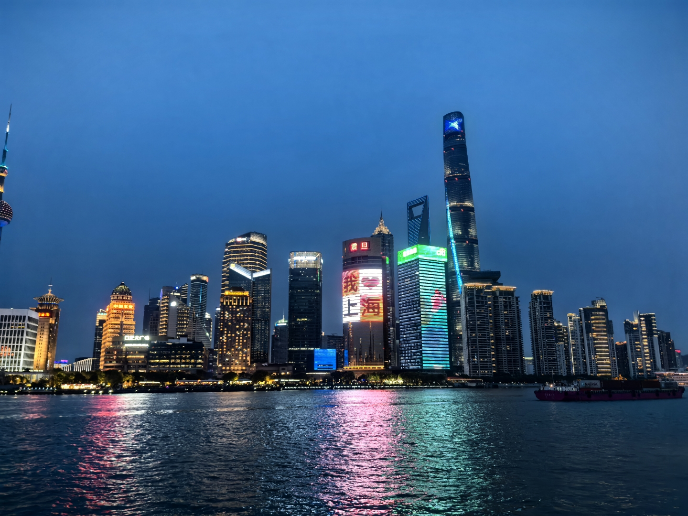
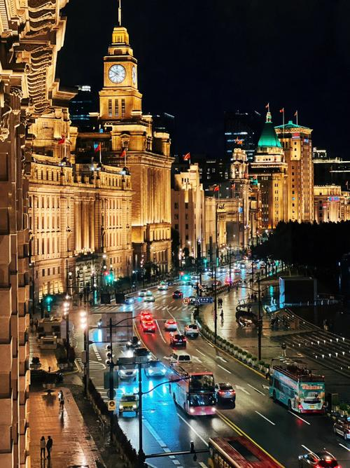
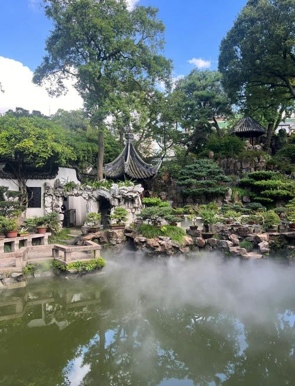
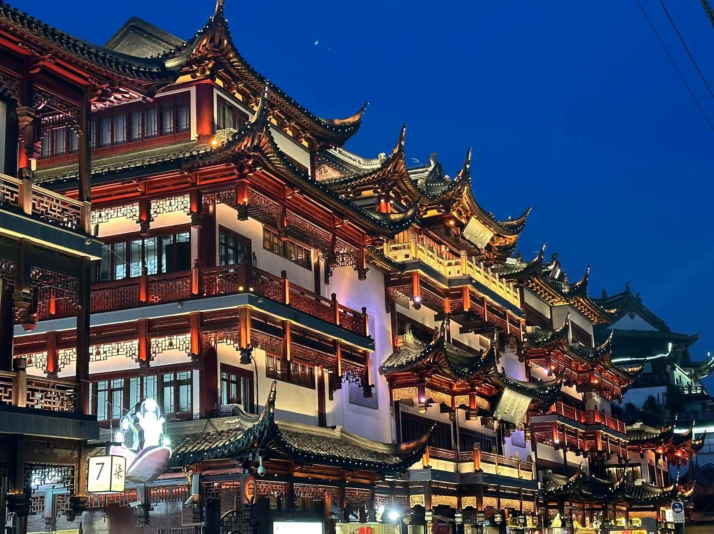

Explore Shanghai
As a global financial hub, Shanghai offers an unparalleled backdrop for your studies.
From the modern skyscrapers of Lujiazui to the historic charm of the Bund, you will experience a unique blend of East and West.
Modern Finance & the Bund
Walk along the Huangpu River and see the contrast between 19th-century architecture and some of the world’s tallest skyscrapers.
This area is at the center of China’s financial growth and international exchange.


Gardens & Culture
Discover the peaceful beauty of Yu Garden.
Whether you are wandering through traditional rockeries or enjoying vibrant lantern displays at night, these sites offer a deep connection to China’s cultural history.

